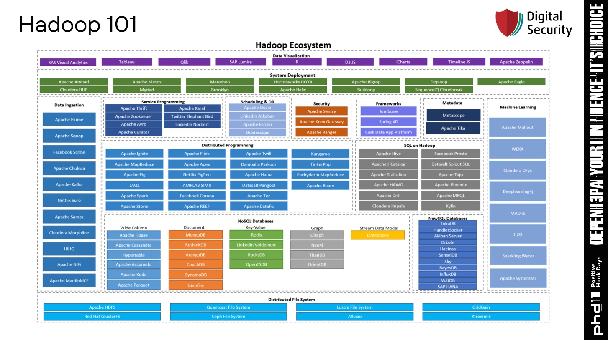
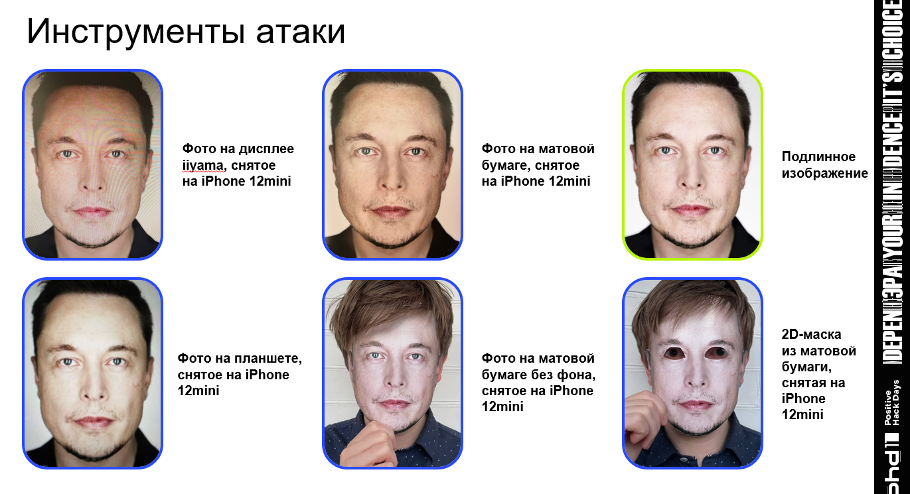
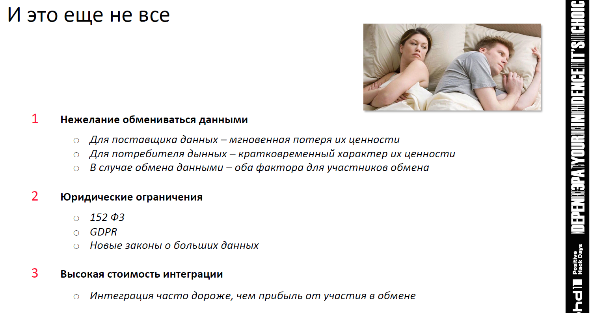

Подборка самых просматриваемых докладов на PHDays
(Не)безопасность больших данных
Автор доклада - тимлид Digital Security и пентестер Вадим Шелест
Как объяснил спикер, распределенная файловая система Hadoop — один из основных инструментов, используемых для анализа big data. Это целая экосистема, состоящая из более чем 40 элементов: хранилищ и озер данных, компонентов для конфигурации и управления кластером (например, Hue и Apache ZooKeeper), инструментов обработки информации (YARN, Apache Spark и других). Ошибки конфигурации позволяют злоумышленникам получить доступ к внутренней инфраструктуре Hadoop.

Опыт применения GAN для генерации атак
Авторы доклада - Николай Лыфенко и Иван Худяшов из Positive Technologies
Выступили с совместным докладом об опыте применения моделей GAN для генерации различных векторов атак в контексте внедрения SQL-кода. Предлагаемый ими подход позволяет находить возможные обходы детекторов, основанных на контекстно-свободных грамматиках, и тем самым повышать полноту обнаружения атак. Интересно, что в ходе экспертной валидации полученных результатов удалось выявить принципиально новые конструкции векторов атак с внедрением SQL-кода — отличные от тех, на которых проводилось обучение.
Эксплуатационные испытания биометрических алгоритмов обнаружения витальности для ЕБС
Автор доклада - Директор проектов ПАО «Ростелеком» Наталья Бессонова
«Возможные инструменты атак на алгоритмы liveness (биометрическое определение живого лица) разделены на три уровня. Рассмотрим их на примере такой модальности, как лицо. Распечатки фотографий или фото на дисплее мобильных устройств — простейший инструмент атаки. Ее сможет реализовать любой человек без специальной подготовки и оборудования. Бумажные маски или видео на дисплее мобильных устройств используются на втором уровне. Самый сложный уровень — использование 3D масок и дипфейков, — объясняет Наталья. — Недавно в СМИ поднялась волна хайпа вокруг того, что никакой защиты от дипфейков нет, что если злоумышленники украли биометрические данные пользователя или получили их из открытых сетей (наверняка многие из вас выкладывают свои фотографии в соцсети), то пользователю можно ставить крест на цифровой жизни с использованием биометрии, так как с помощью его дипфейка или другого вида подделки злоумышленники смогут взламывать системы. Однако в подобных материалах дипфейки рассматривались с точки зрения атаки на канал, а не на датчик. Следует разделять два этих кейса. В случае атаки на канал злоумышленник должен обладать минимальными знаниями, тогда как во втором случае провести атаку сможет любой человек, просто показав дипфейк-видео. Сегодня в ЕБС алгоритмы обнаружения работают в обоих направлениях, то есть и обнаруживают дипфейки в канале, и выявляют видеоподделки, которые злоумышленники показывают датчику с экранов своих устройств».

Кроме того, Наталья продемонстрировала участникам результаты некоторых испытаний и рассказала о сложностях, с которыми они столкнулись.
Технологии совместных вычислений: как компаниям обмениваться данными, не обмениваясь ими
Автор доклада - Петр Емельянов,CEO Bloomtech LLC
Пользовательские данные обычно имеют длительную маржинальную полезность. Например, у человека украли банковскую карту. Казалось бы, катастрофа. Но человек звонит в банк, блокирует карту и за две минуты решает эту проблему. А если утекли данные о том, что человек хронически болен, то, к сожалению, за две минуты он не вылечится, а знание о его болезни можно коммерциализировать, причем, как правило, не в его пользу. Утечки — это не единственный стоп-фактор, который ограничивает информационные коллаборации. Компании не очень хотят обмениваться данными, так как это обычно обозначает быструю утрату ценности данных. Причем как для передающего, так и для получателя. Дело здесь опять в маржинальной полезности. Интерес «я хочу пиццу» особо не продашь, потому что это желание первых двух минут, и, возможно, через полчаса человеку пицца уже нужна не будет. А интерес «я — горнолыжник» вполне можно продавать, но не понятно как долго: бывает, что горнолыжники ломают ноги или становятся мотогонщиками.
